Land Clearing & Mulching
Drum Mulchers, Disc Mulchers and heavy-duty slashers for forestry mulching and heavy vegetation clearing.
Land Clearing Equipment
 DRUM MULCHER
90+ HP high-flow skid steers only
DRUM MULCHER
90+ HP high-flow skid steers only
Virnig V70 Drum Mulcher
Fine material processing with a controlled finished result.
For work where the vegetation needs to be thoroughly processed rather than simply severed — including stumps ground below grade.
 DISC MULCHER
90+ HP high-flow skid steers only
DISC MULCHER
90+ HP high-flow skid steers only
Virnig V70 Tree Disc Mulcher
High-production cutting for demanding clearing work.
For work where standing timber and dense vegetation need to come down efficiently and a fine residual mulch is not the objective.
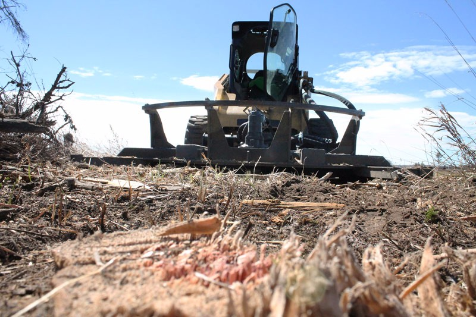
SLASHERSVirnig Heavy-Duty Skid Steer Slashers
High-output cutting for grass, scrub, regrowth and lighter woody vegetation.
V40 through V70 — four families, standard and high-flow motors, closed, floating and open front decks. Where the material doesn't need processing, this is the more productive tool.
 QUADSAW
QUADSAW
GreenTec QuadSaw
High-capacity tree and limb cutting for canopy clearance and tree-line maintenance — configurable across more carrier types than the skid-steer mulchers.
View QuadSaws →Drum or Disc Mulcher?
Both cut to 356 mm and both need a high-flow skid steer. The difference is how much of the available power goes into processing the material once it has been severed.

More processing. Finer result.
More production. Less processing.
| V70 Drum — DRM60 / DRM72 | V70 Disc — TDM60 | |
|---|---|---|
| Primary action | Cut and progressively reprocess | Cut and sever |
| Residual material | Fine mulch, discharge size adjustable | Coarser material |
| Relative production | Moderate — more power into processing | Higher — less reprocessing |
| Cutting capacity | 356 mm (14") | 356 mm (14") |
| Cut width | 1,524 mm / 1,829 mm | 1,524 mm |
| Recommended flow | 114–190 L/min (30–50 GPM) | 114–190 L/min (30–50 GPM) |
| Max pressure | 4,500 PSI | 4,500 PSI |
| Attachment weight | 1,241 / 1,365 kg | 1,229 kg |
| Loader capacity | Above 1,270 kg | Above 1,270 kg |
Specifications from the Virnig spec sheets carried on each DTE product page. Neither attachment is universally better — the right one depends on the material, the required finish and the carrier.
See the Difference
The residual material tells the story faster than a spec table. Same site, same stand, three frames.
Density and typical stem diameter visible.
Disc — higher production, coarser residual material.
Drum — more processing, finer residual material.
Shoot all three from the same height and distance on the same site — comparable framing is what makes the comparison credible.
See the Equipment Working
Proven in the Field
Upload the customer and machine photograph — carrier and attachment under load, standing vegetation one side, processed ground the other.
Virnig V70 Drum Mulcher
Mulching where material processing and the finished result matter. 90+ hp high-flow skid steers only.
An 18" balanced Quadco® drum progressively cuts and processes standing vegetation, felled material and woody debris. Compared with the disc, the drum performs more material processing and produces a finer residual mulch.
That matters where the condition of the finished site is part of the job, or where material has to be processed rather than simply severed. Rolled forward on the skid shoes the drum mulches 51 mm below grade, so stumps can be taken down in the same pass.
Fixed and variable speed bent-axis piston motors are available; the variable motor carries more torque for stump grinding. Every unit is factory tuned to the loader for correct drum RPM — no motor adjustment or service tech required on arrival.
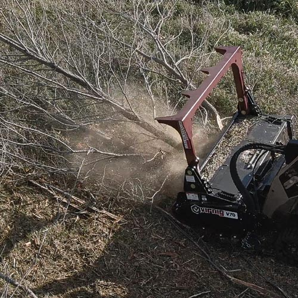
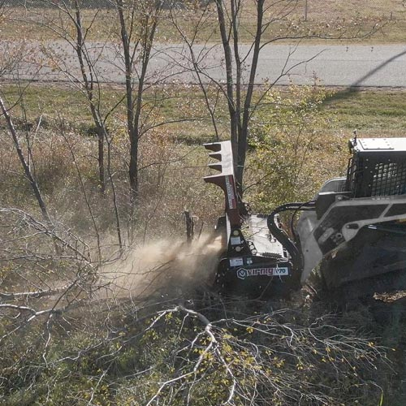
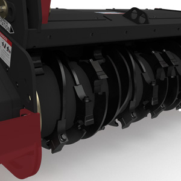
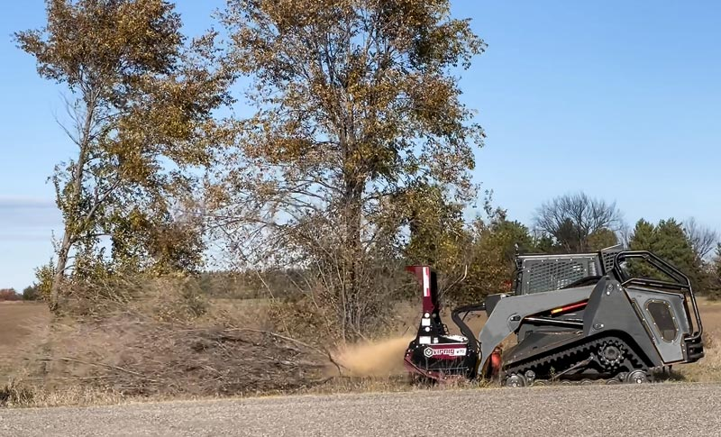
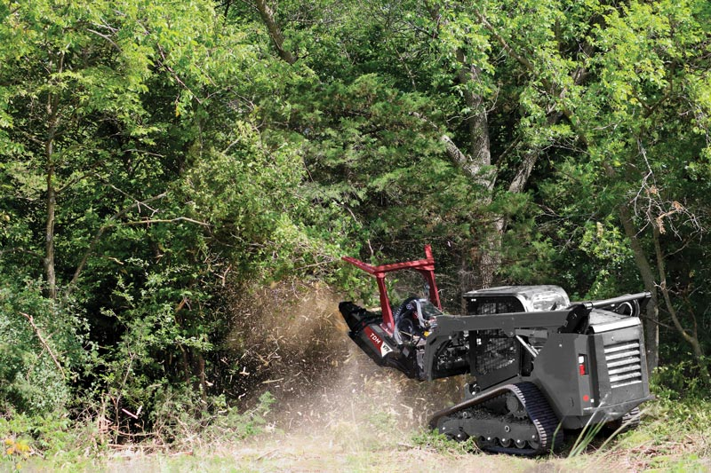
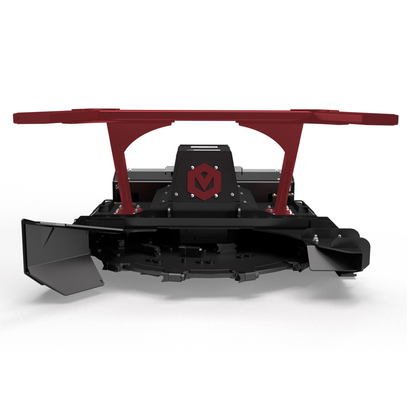
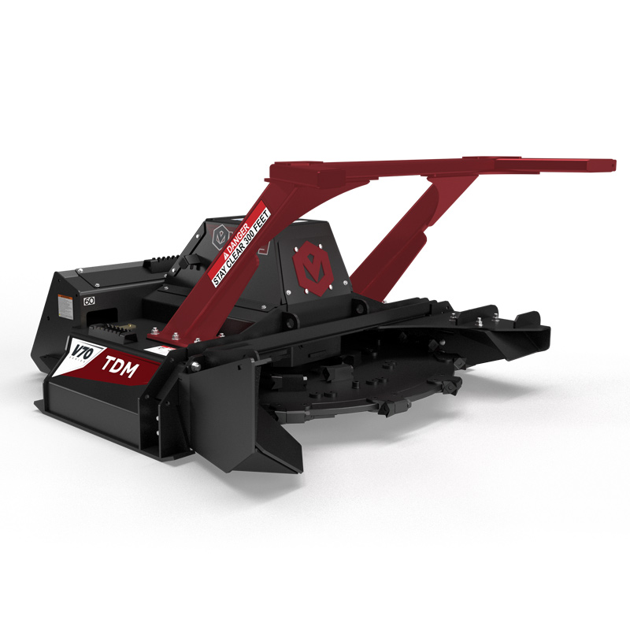
Virnig V70 Tree Disc Mulcher
High-production cutting for demanding vegetation. 90+ hp high-flow skid steers only.
A 60" fully-machined, balanced Quadco® disc stores rotational energy and uses it to sever standing trees and vegetation aggressively. Rated to 356 mm cutting, and 152–203 mm where the material is being mulched rather than just cut.
Compared with the drum it performs less material processing, which frees the attachment to prioritise cutting and clearing productivity. It suits jobs where dense vegetation has to be removed efficiently and a fine residual mulch is not the primary objective.
Both mulchers travel over the material they have processed, so operating height and ground clearance are part of the specification conversation, not an afterthought.
Can Your Skid Steer Run It?
Flow alone doesn't decide it. Both V70 mulchers want 114–190 L/min and a loader rated above 1,270 kg, and the attachment itself weighs 1,229–1,365 kg — which puts engine power, machine weight, stability and cooling in the conversation as much as hydraulics.
Send us the machine, we'll confirm it
Make, model and hydraulic flow if you know it. We check it against the attachment specification and tell you straight whether it will run properly — before you commit to anything.
Request a quote Call 07 5315 8020Not Every Job Needs a Forestry Mulcher
Where the work is predominantly grass, scrub, regrowth and lighter woody vegetation, a heavy-duty rotary brush cutter is the simpler, more productive tool — it doesn't spend power processing material that didn't need processing.
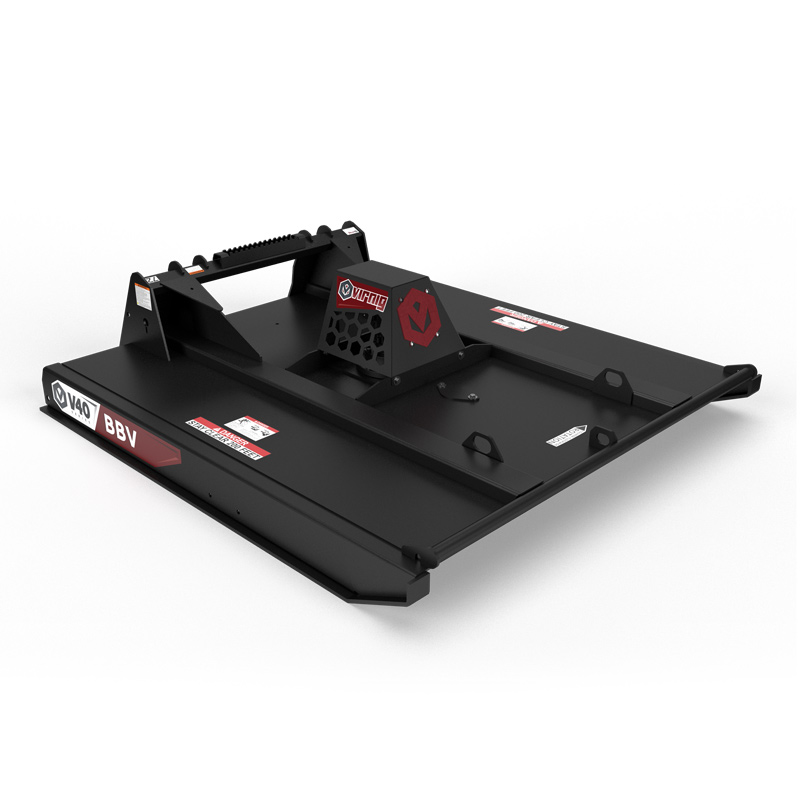
Closed / Open Front Rotary Brush Cutter

Rotary Brush Cutter — 4 configurations

Industrial Rotary Cutter

Piston Rotary Cutter
What Are You Cutting?
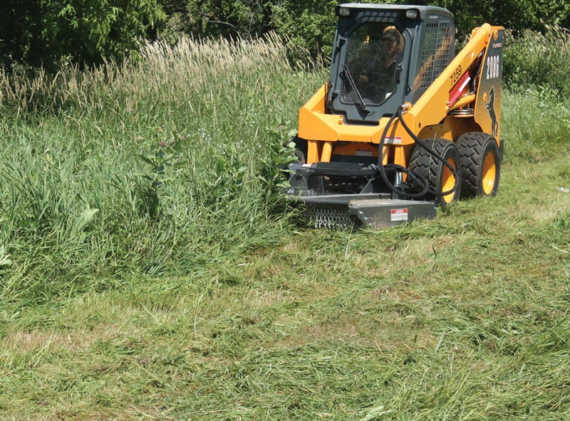
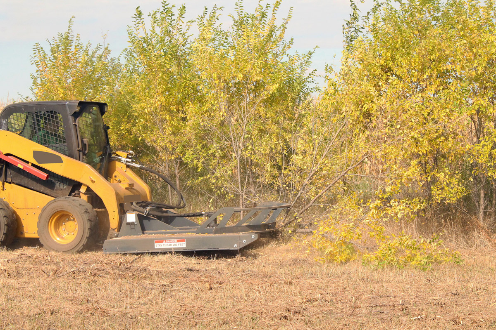
General guidance only — the appropriate attachment depends on the actual material, site conditions, required finish and carrier. Not sure? Send us photos and we'll recommend the appropriate attachment.
Help me chooseTree Trimming & Vegetation Clearance
Where the objective is to selectively cut limbs and standing branches rather than mulch the entire vegetation profile, the GreenTec QuadSaw provides a high-capacity saw solution — canopy clearance, tree-line management, roadside and track clearance, encroachment.
Unlike the skid-steer-focused Virnig mulchers, the QuadSaw can be configured across multiple suitable carrier types through the GreenTec Multi Carrier system — tractor, telehandler, loader or skid steer.
Equipment in the Field
Tell Us What You're Cutting
Send us the material and the machine and we'll come back with the attachment and configuration that suits both.
Or call 07 5315 8020Get the Attachment and Carrier Combination Right
Drum, disc, rotary cutter or saw chosen against the actual application — not against what is in stock. If none of them suits the job, we will say so.
Machine weight, rated operating capacity and mounting checked before an order is placed. A 1,365 kg attachment on an underweight loader is a stability problem, not a bargain.
Flow and pressure confirmed against the attachment spec — the difference between a head that holds speed under load and one that sits in relief.
Hose length, routing and coupler sizing are built to your machine brand and model, and every hydraulic attachment is tested before it leaves the factory.
Teeth, blades and wear parts held in Australia for the Virnig and GreenTec ranges we distribute.
Access to people who have specced and serviced these machines — before the equipment arrives and after it goes to work.
We size attachments against carriers every week. If the machine you run won't do the job properly, we'd rather tell you before you buy.
Land Clearing & Forestry Mulching — Technical Detail
Forestry mulching
Forestry mulching is a mechanical vegetation-management process where a purpose-built attachment cuts and processes trees, scrub and woody vegetation at the point of operation. On skid steer applications this is commonly performed with drum-style or disc-style mulchers.
Unlike clearing approaches that require separate cutting, handling and processing stages, mulching allows much of the vegetation to be processed during the clearing operation. The appropriate system depends on vegetation type, tree diameter, density, ground conditions, desired finish, stump requirements, required productivity, hydraulic capacity and carrier configuration.
Drum mulcher vs disc mulcher
A drum is generally selected where fine material processing is required, finished condition matters, more complete processing is needed, stumps require treatment or controlled discharge is an advantage.
A disc is generally selected where cutting productivity is prioritised, standing timber needs to be removed rapidly, dense vegetation has to come down, and coarser residual material is acceptable. Neither is universally better — the correct attachment depends on the job.
What determines mulching productivity
The major variables are vegetation density (volume of material per metre travelled), material diameter, and material type — species, density, green growth, dead timber and fibrous vegetation all behave differently.
Then there is the required finish: severing and mulching vegetation down with a Disc Mulcher is fundamentally different from the finer processing of a Drum Mulcher. Ground conditions, carrier hydraulic horsepower, cooling, weight and stability, and operator technique all contribute to the productivity.
When a slasher is more appropriate
Heavy-duty rotary cutters are often the more appropriate tool where the application consists primarily of grass, brush, regrowth, scrub and lighter woody vegetation. Virnig cutters are rated from 76 mm on the V40 to 203 mm on the V60 and V70 open front.
A forestry mulcher should not be specified by default where a rotary cutter can handle the material more efficiently. Matching the tool to the vegetation is usually a bigger productivity decision than choosing between two mulchers.
Choosing a skid steer for mulching
Hydraulic horsepower is an equal combination of flow and pressure. Both the V70 Disc and Drum Mulcher can take up to 190 L/min @ 4,500 PSI, so choosing a skid steer with the highest specifications along with a sufficient cooling capacity will ensure the best performance.
The skid steer’s rated operating capacity needs to be above 1,270 kg; forestry guarding and a shatterproof cab are also recommended. Send us the make and model and we will match it against the attachment.
Land Clearing Equipment FAQs
Assets to collect before this page goes live
Hide this block with the Show asset checklist tweak before publishing.

What Are You Cutting?
Send us your carrier details and photos of the vegetation. We'll help match the attachment to the job.